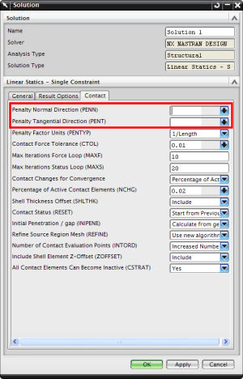

Because contacting surfaces can separate during a contact solution, a singularity can arise.
If a singularity does arise, the default settings of blank data fields for Penalty Normal Direction and Penalty Tangential Direction allow the software to automatically adjust the penalty factors to resolve the singularity.
